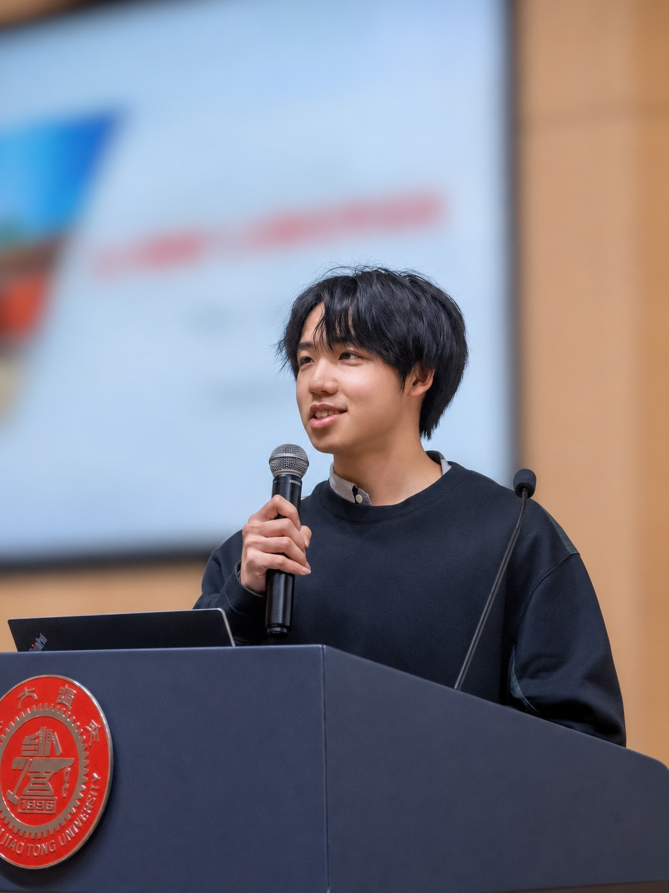

About
Yiwen Gao
M.S.E. student in Mechanical Engineering and Applied Mechanics at the University of Pennsylvania.
My research interests are in robotic manipulation and safe, compliant physical interaction. I’m particularly interested in how mechanical design and feedback control, including impedance control, can work together to shape a robot’s response to contact.
During a summer research internship in Stanford’s Salisbury Robotics Lab, I helped develop a cable-driven manipulator that combined a variable stiffness transmission with feedback control for joint position. The prototype let us adjust mechanical stiffness, a component of impedance, independently of joint position. At Shanghai Jiao Tong University, I worked on an underactuated gripper, a mechanical swimmer for experiments in viscous fluids, and a measurement and control system for a bearing test rig. I also designed a head and neck assembly and developed gripper concepts as a structural engineering intern at the Chengdu Humanoid Robot Innovation Center.
